About
RiskMap harnesses the power of citizen reporting and social media to map time-critical information without needing to install any new applications or training. Currently operating in Indonesia, India, Japan, and the United States, this platform connects residents, who often have the best-localized information, with emergency managers to drastically cut down on response times. Through the live map, residents are also able to inform each other about dynamically changing situations in the city and help each other navigate to safety. The platform currently works with Twitter, Facebook, and Telegram and also visualizes real-time sensor information, such as changing water levels in flood gauges, monitoring wells, and pumping stations.
This platform was widely shared and used during high-intensity rainfall events in Jakarta on February 21, 2017, and over a quarter-million residents used the website to navigate the flooded city. The public map was also embedded in the Uber app for drivers to help them travel safely through the city. Similarly, in Chennai during a high-intensity single-day rainfall event on November 2, 2017, the Riskmap.in website received 1152 page views a minute at its peak with a total of 111,808 page views in 24 hours.
Current research work also focuses on extending the system beyond flooding to include multiple hazards types and developing custom decision support tools for the governments. We are actively working on integrating weather data and leveraging machine learning to automate outreach to inform residents to prepare before the peak of the storm, which enhances the two-way communication capabilities of this platform.
 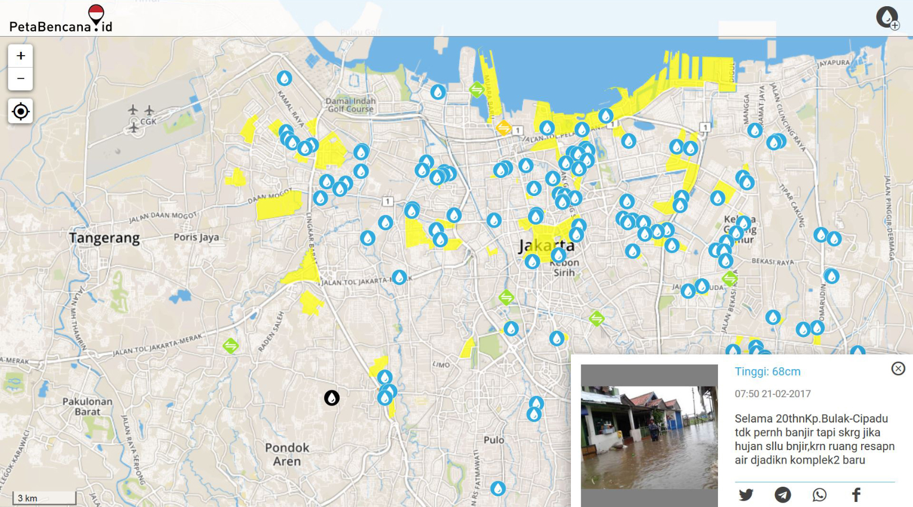
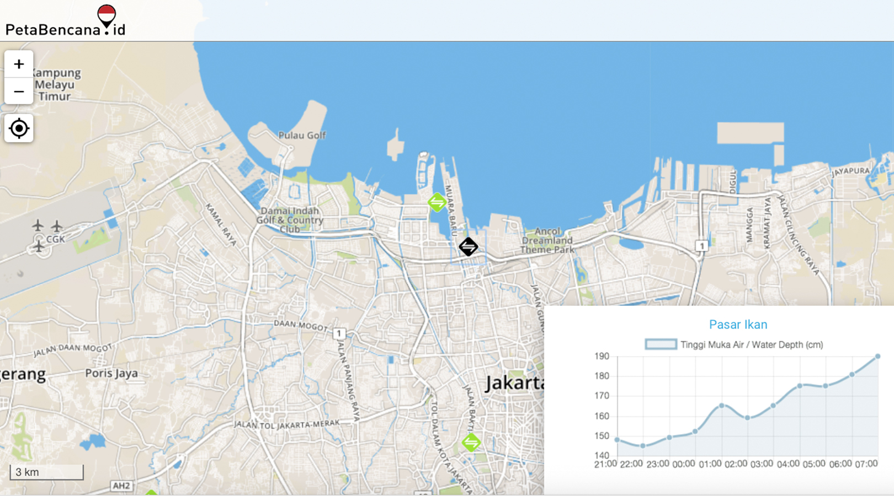
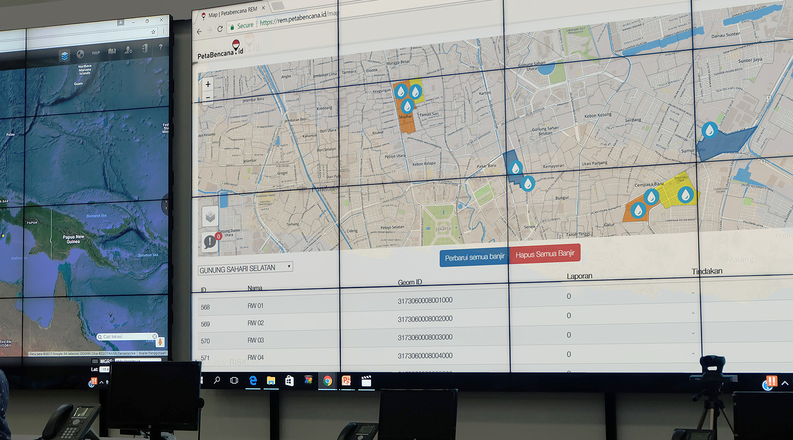
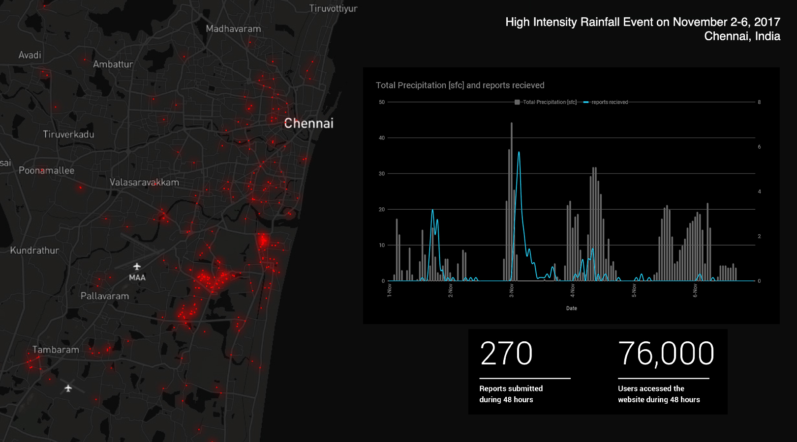
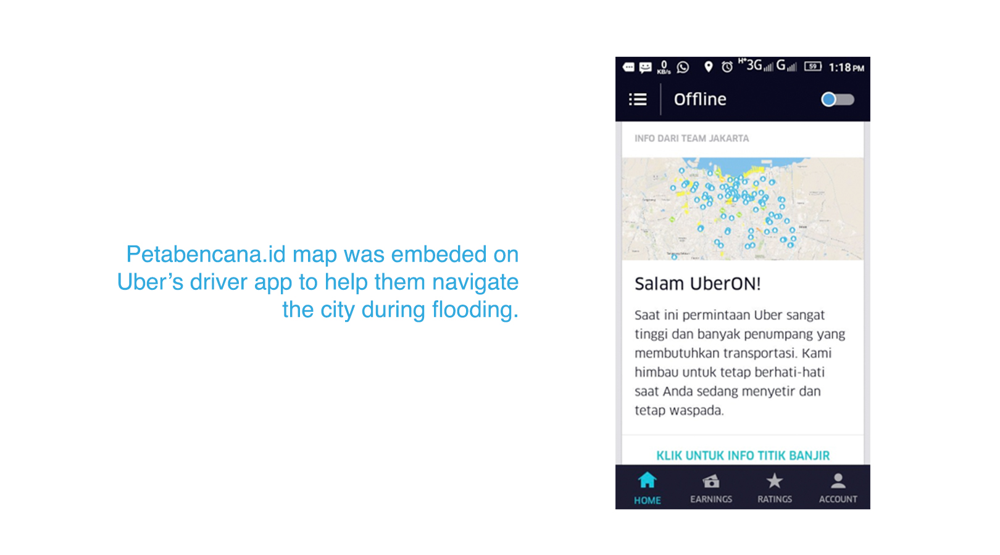
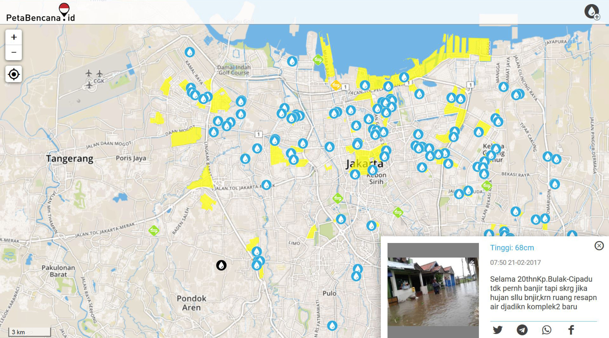
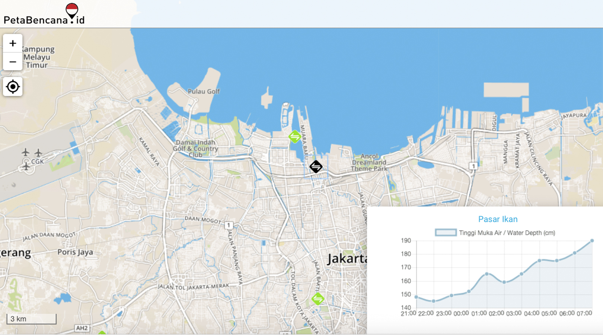
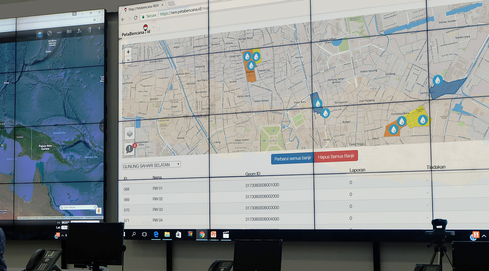
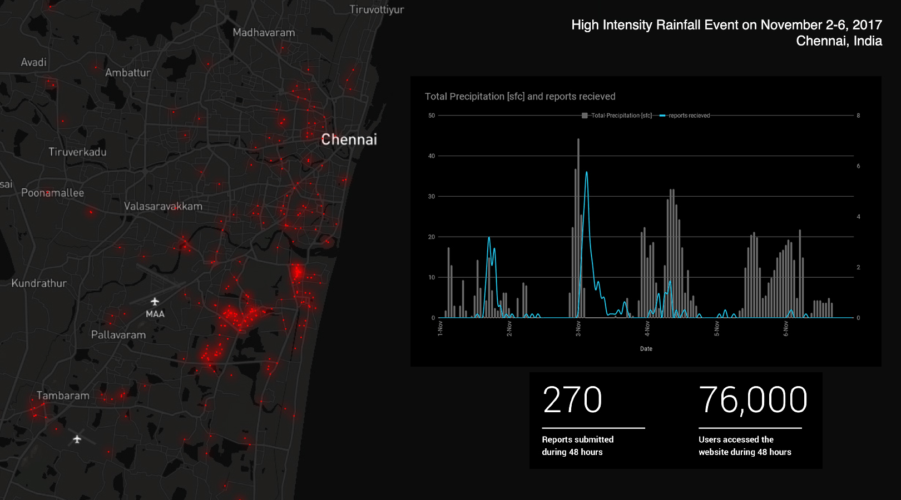
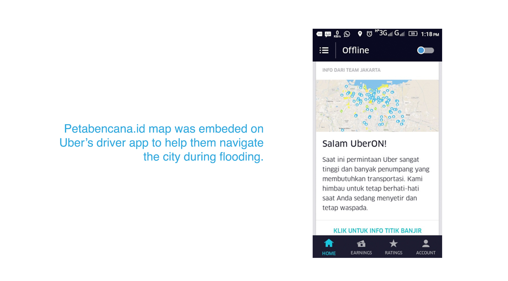
 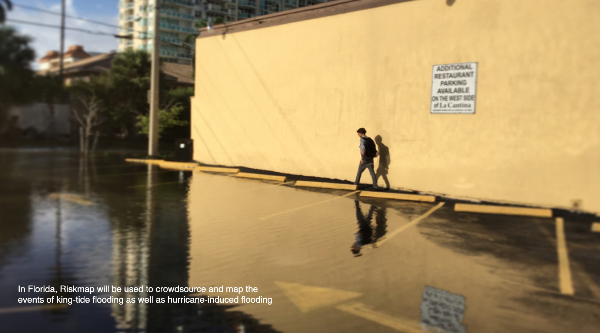
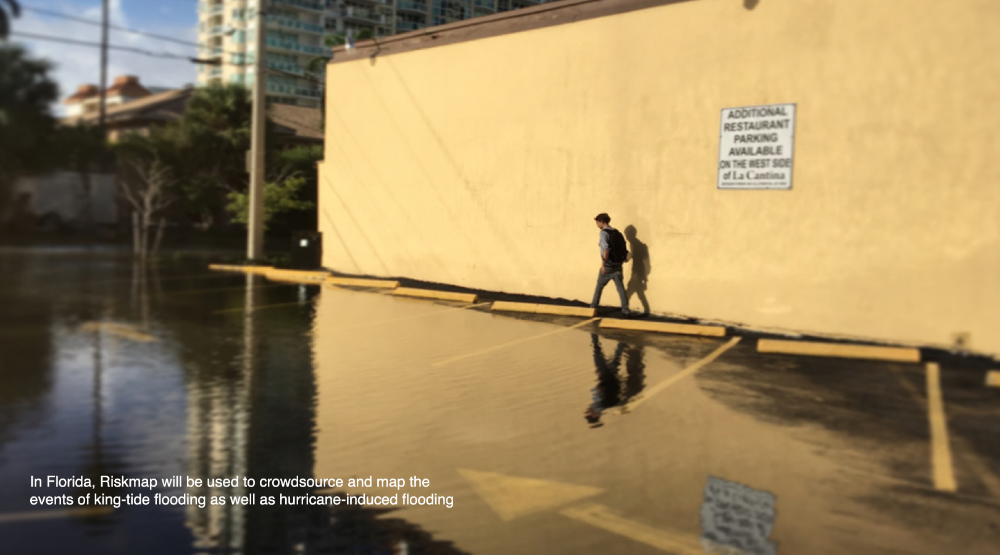